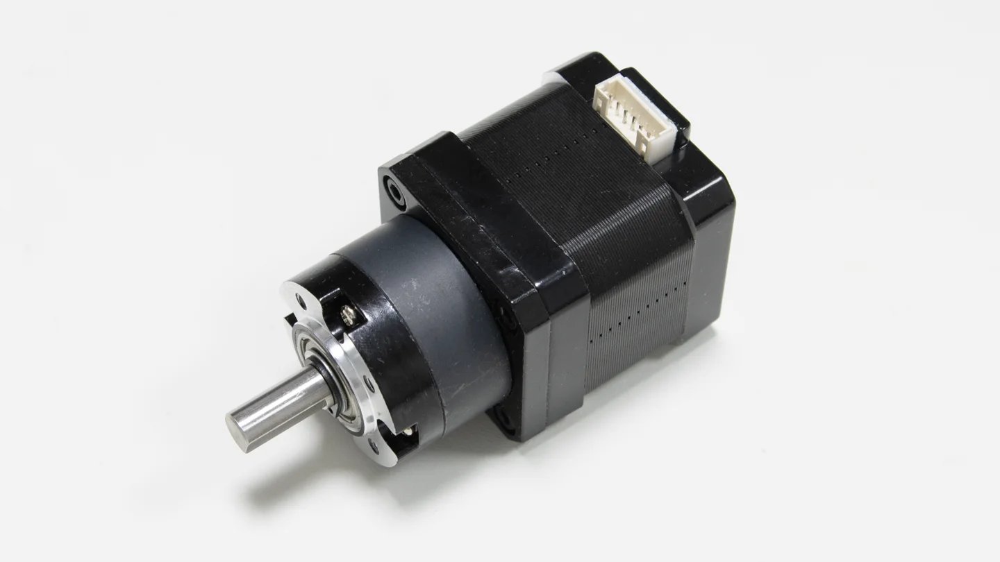
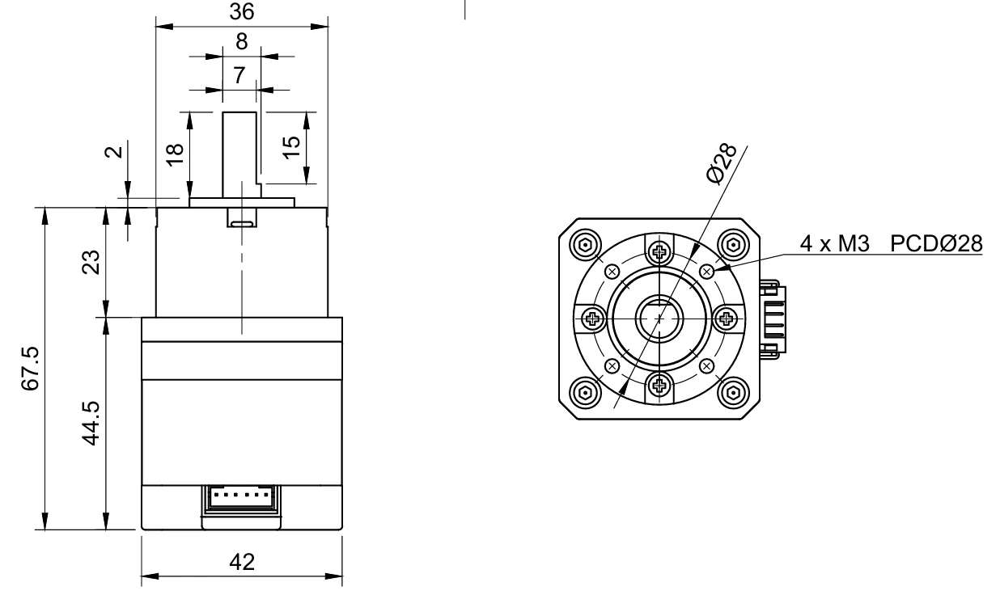
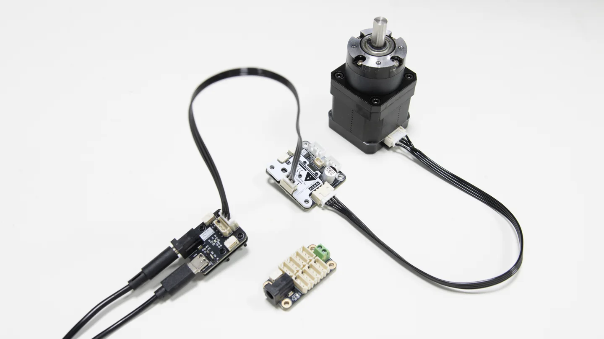
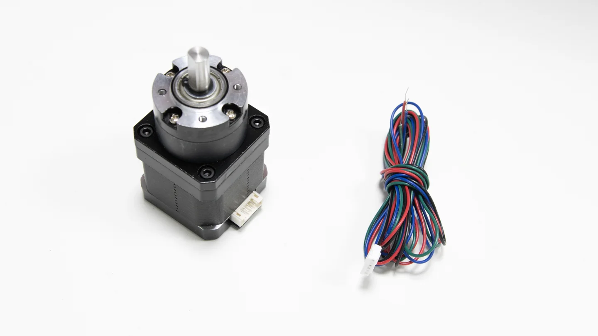

5.1818:1 planetary reduction
Reduces output speed and increases holding torque for low-speed mechanisms.
PLANETARY GEARED STEPPER MOTOR
An integrated 42-size stepper motor and 5.1818:1 planetary gearbox for mechanisms that need higher output torque. Typical applications include robot joints, mobile bases, linear stages, lead screws and rotary platforms.
Brand note: The motor is supplied under the Pufeide (普菲德) brand. LYGION provides the store listing, cable and integration information for TTL Stepper Driver (A), allowing related parts to be purchased together.

PRODUCT FEATURES
4240BY-G5.2 is a motor-and-gearbox assembly without an encoder or motor driver. It is intended for robotics and automation projects that provide their own mounting structure and motion controller.
Reduces output speed and increases holding torque for low-speed mechanisms.
At 24 V and 1.5 A, the gearbox provides approximately 14 kg·cm of output holding torque.
The front face provides four M3 mounting holes on a Ø28 mm pitch circle.
Use a conventional stepper driver or pair the motor with TTL Stepper Driver (A).

MECHANICAL INTEGRATION
The output shaft is Ø8 mm and includes a flat for torque transmission.
DRIVE & WIRING
The supplied cable connects to the motor's 2.0-6P socket and exposes four phase wires for the stepper driver. With TTL Stepper Driver (A), the motor can connect to a TTL bus through a TTL Adapter and share that bus with other compatible devices, keeping application-side control more compact.

SPECIFICATIONS

PACKAGE CONTENTS
The stepper driver, TTL Adapter, hub and other mechanical parts are not included. Actual shipment contents follow the store listing.
DOCUMENTATION
The product Wiki provides mechanical, mounting and model resources. For a LYGION TTL drive setup, refer to the driver Wiki as well.